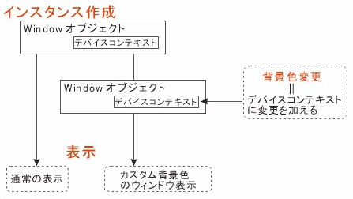

←Back［***］ -- Up［コントロールの背景色を変更する］ -- Forward［ダイアログの背景色の変更］→
ここでは，背景色を変更する際に必要な知識を紹介する．このページを読まなくてもコントロールの背景色の変更の仕方はわかると思うが，ウィンドウズプログラミング習得に必要なフレームワークやフックの知識を紹介する．このページを呼んでもらえれば，なぜコントロールの背景色を変更するためにWM_CTLCOLORメッセージハンドラを追加しなくてはならないのかが分かると思う．
| ●背景色変更のフレームワーク(背景色変更の準備 ) |
Win32アプリケーションにおけるウィンドウとは，私たちがよく言う「窓」ではない．例えば各種コントロールやタイトルバー，スクロールバー，ステータスバーなども全てウィンドウである．簡単にいうとウィンドウハンドルを持っているインスタンスをウィンドウと述べても間違いではないということである．MFCにおいては，CWndクラスまたはCWndの派生クラスのインスタンスのことをウィンドウというと考えてもいいだろう．
さて，これらのウィンドウの描画しているのは誰だろうか？つまりウィンドウ描画の責任は誰にあるのか？という疑問が残る．どこかにウィンドウ描画専用のオブジェクトのようなものがあって一括描画しているのか・・・などいろいろなことを考えてしまう．
実際はウィンドウ自身が，そのウィンドウを描画しているのである．何か不思議な感じではあるが，ウィンドウは「デバイスコンテキスト」というものを必ず持っていて，そのデバイスコンテキストを使用して描画しているのである．
デバイスコンテキスト(Device Context)とは，出力デバイスとアプリケーションの間の”表示”に関する緩衝材，あるいは仲介役である．出力デバイスは，プリンタやディスプレイなどイメージ出力ができるものに相当する．なぜこのようなものが必要かを考えるまでもないだろう．みんながWINDOWSを使用していたとしても，表示するディスプレイやプリンタは異なるはずである．性能の高いものから，低いものまで多種多様である．しかし，基本的なGUIの描画に関して，その表示結果がデバイス依存では困るからである．MFCでは，CDCというデバイスコンテキストクラスがあり，これを操作することでデバイスコンテキストを自由に操ることができる．
以上をふまえると，ウィンドウを描画するものは，ウィンドウが持つデバイスコンテキストであり，背景色もテキスト色もすべてデバイスコンテキストの変更によって実現できるのであるから，ウィンドウ（コントロール）が描画されるまでに，ウィンドウのデバイスコンテキストを変更し，表示はそれぞれのウィンドウに「お任せ」すればいいのである．この「お任せ」の概念は，プログラミングにとって非常に重要なオブジェクト指向に相当する．カスタムのカラーでウィンドウを描画する過程を図にしたら以下のようになるだろう．
figure1.1 ウィンドウ(コントロール)の描画色の変更手続きと描画するとウィンドウの描画色(背景色，テキストカラー，etc...)変更は，非常に簡単だと思うかもしれない．しかしそれは大きな間違いである．なぜなら，
などの問題があるからだ．
ウィンドウの描画色を変更するためには，デバイスコンテキストに修正を加えればよいことは分かっている．ところで，ウィンドウのデバイスコンテキストの処理は，既存のウィンドウ・コントロールクラスの中の WM_PAINTで行われている．このWM_PAINTハンドラは，Windows内の低水準のコードの中に隠蔽されているため，私たちが直接扱うことはできないのである．したがって，ウィンドウ（コントロール）の細かい設定をするためには，コントロールクラス全体を，プログラマが再インプリメントするか，少なくともそのコントロールのオーナー描画バージョンを作る必要が出てきてしまう．しかし実際こんなことをしていられるわけがないのである．
この情報隠蔽は，ある意味フレームワークが行われる上の最大の欠点である．ウィンドウズプログラミングでは，ウィンドウのWM_PAINTハンドラへのアクセスを提供するものが準備されている．このアクセス方式を「フック」という．背景色を変更するためのフックとしてWM_CTLCOLORメッセージがあり，わたしたちはこのメッセージを処理することで，完全なオーナー描画コントロールを作らなくても，コントロールの描画に使われている属性（デバイスコンテキスト）を変更することができるようになるのである．ここでフックについて簡単に説明しておこう．分かりにくいで評判？のMSDNライブラリにはこのように書かれている．
フック
この説明では分かりにくい（もともと英語で書かれているライブラリ情報を無理して日本語訳しているからだと思う）．そこでもっと簡単に説明していこうと思う．
MFCでプログラミングしていると，ウィンドウズとアプリケーション間のやり取りがわからないことが多いので，まずはウィンドウズプログラミングに重要であるメッセージがどのように処理されているか説明する．その方がフックの重要性がわかるからだ．メッセージは、OS(WINDOWS)から送られてくる．送られてきたメッセージは、SendMessage()を介して送られていくる一部を除き，メッセージキューにプッシュされる．キュー（Queue）は，日本語で待ち行列と呼ばれ，繁盛しているファミレスの客を想像してもらえば分かりやすいだろうが，はじめに来た客からサービスを受けられるものである．このキューは，ひとつのスレッド（簡単に言えば，１つのアプリケーション）につき１つしか存在しない．プッシュというのは，キューにデータを格納することである．
１つのアプリケーションでもウィンドウはたくさん存在する．ボタンやエディットボックスもウィンドウとして考えれば，例えば「マウスが押された」というメッセージは，ただ押された情報だけでなく，どのウィンドウが押されたのか？という情報を持っていることに注意してほしい．キューには，スレッド（アプリ）が持つ全てのウィンドウ宛のメッセージが到着順に並べられていると考えればよいだろう．
メッセージキューにストックされたメッセージは，メッセージループの中で到着順が一番早いものから（古いものから）順番に取り出される（ポップという）．取り出されたメッセージは，いくつかの処理を経て，メッセージの送り先となるウィンドウが持つ，メッセージ処理関数（ターゲットウィンドウプロシージャ）へと送られる．例えばボタンAが押されたというメッセージとボタンBが押されたという,メッセージは全く別のウィンドウプロシージャに転送されることになる．プログラマーはウィンドウプロシージャでメッセージに対応する処理を行えば，ある程度GUI機能を備えたアプリができるという仕組みなのだ．これを図示したものがfigure1.2である．
figure1.2 メッセージ処理 figure1.3 MFCによるメッセージ処理しかしこのページはMFCベースでプログラミングをすることを念頭においているためMFCのケースを話をしておこう．といってもそんなに悩むことはない．MFCは別に特別なことをしているのではないからである．figure1.3のように，メッセージの流れを点線部でまとめ，見えなくしているだけである．私たちは単純に，ウィンドウズからの一部のメッセージがスレッド（アプリ）に到着し，メッセージに対応付けされたメッセージハンドラ関数が起動されていると考え，その関数で目的の処理を行うことだけに目を向ければいいのである．
ただMFC(SDKもだが)ではほんの一部のメッセージのみ，ハンドラ（関数）という形で処理することが可能である．つまりあるウィンドウ（コントロール）の描画命令メッセージWM_PAINTが来たとしても，それはメッセージハンドラでは処理できず，そのウィンドウ固有のウィンドウプロシージャで処理されてしまう．故にプログラマが，本来描画色を決めなくてはならない位置にあるWM_PAINTメッセージが受け取れないので，描画色を変更したウィンドウを描くことはできなくなってしまうのである．背景色変更が一筋縄でいかないのは，このようなバックグラウンドがあるからなのだ．さて，問題があることは分かった．同時に解決策も大体分かっている．「大部分」の方へ流れてしまう”描画メッセージWM_PAINT”を取り出して，「一部」の方で使えるようにすればいいのである．そこで活躍するのがフックである．
フックは「釣り針」のように，”かぎ状のもの”を指す．また「魚釣り」という意味もある．ウィンドウズプログラミングに関するフックとは，特定のメッセージをフックで引っ掛けて取り上げることである．OSから送られてくるメッセージがメッセージキューから取り出されて，ターゲットウィンドウプロシージャに流れる前に，特定のメッセージを引っ掛けて取り上げ，特定の処理を行ったあと，ターゲットウィンドウプロシージャに戻し，既定の処理を行うことをフックシステムという．フックシステムをもっと直感的に捕えるとすると，魚釣りを考えればいい．
figure1.4 メッセージの流れと魚？メッセージは，ある流れにそって順番に泳いでいる魚だと考える．これらは放っておけばターゲットウィンドウプロシージャに泳いでいき，各ウィンドウの処理コードで処理（調理？）されるのである（figure1.4）．我々は，描画色を変更するメッセージがWM_PAINTであることを知っているのだから，WM_PAINTという名前の魚を釣り上げればよいということは容易にわかるだろう．
figure1.5 フックは魚釣りである我々は，魚（メッセージWM_PAINT）を釣り上げた後，WM_PAINTのターゲットウィンドウが持つデバイスコンテキストを変更する．変更し後，魚（メッセージWM_PAINT）をターゲットウィンドウのウィンドウプロシージャに放流する．そうすることで描画処理に手を加えなくても描画色は変更されるのである．あまり良くない言い方をすれば，フックはメッセージを横取りするものだと思っても良い．
フックは分かったものの，我々は描画色を変更するために自ら明示的にフックを使用することはない※1．それはWM_CTLCOLORハンドラを追加すると，WM_PAINTメッセージを釣り上げてくるフックコードが，内部で記述されるからである．したがってMFCを使う分においては，特にフックを意識することなくプログラミングが可能だったわけである．しかしフックを知っておくことは重要である．
←Back［***］ -- Up［コントロールの背景色を変更する］ -- Forward［ダイアログの背景色の変更］→
VisualC++でソフトを作ろう (c) 藤門千明